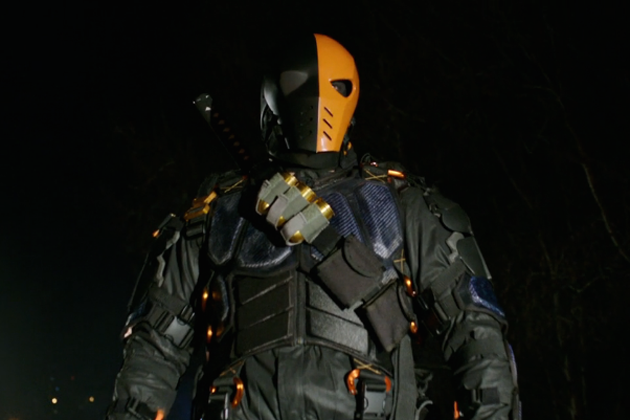
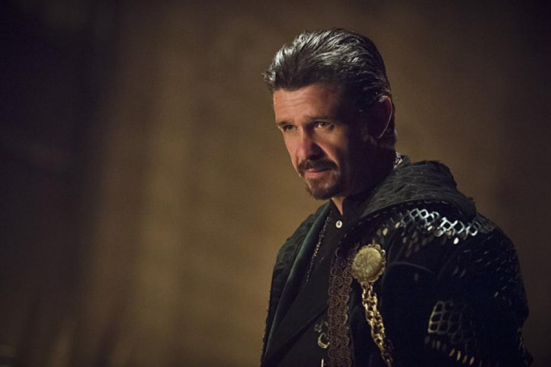

Après un violent naufrage, le milliardaire Oliver Queen, playboy, porté disparu et présumé mort depuis cinq ans, est découvert vivant sur une île isolée dans le Pacifique. Quand il rentre chez lui, à Starling City, sa mère Moira, sa sœur Théa et son meilleur ami Tommy l'accueillent chez lui, mais ils sentent qu'Oliver a changé. Alors qu'Oliver cache la vérité sur l'homme qu'il est devenu, il cherche désespérément à faire amende honorable pour ses actions passées et tente de se réconcilier avec son ex-petite amie, Laurel Lance.
Il crée alors secrètement le personnage de l’Archer Vert qui va réparer les torts de sa famille, lutter contre les maux de la société et redonner à la ville de Starling son ancienne gloire. En tant qu'héritier de la multinationale Queen Consolidated, Oliver joue également le rôle d'un coureur de jupons riche, insouciant et négligeant afin de cacher son identité secrète. Cependant, le père de Laurel, l'inspecteur Quentin Lance, est déterminé à arrêter le justicier dans sa ville. Dans les épisodes il sera aidé de Felicity une informaticienne et de John Diggle qui faisait partie de l'armeé.
 Episode 1 à 5
Episode 6 à 10
Episode 11 à 15
Episode 16 à 21
Episode 1 à 5
Episode 6 à 10
Episode 11 à 15
Episode 16 à 21
Après la destruction des Glades et la mort de Tommy, Oliver est retourné sur Lian Yu, dévasté par la perte de son ami. Felicity et Diggle retournent le chercher et le convainquent de reprendre sa place à Starling City, mais Oliver est désormais décidé à honorer la mémoire de Tommy en ne commettant plus de meurtres. Cependant, alors qu'il reprend ses marques et que le nombre de ses alliés s'agrandit, il est confronté à un ennemi qu'il pensait avoir vaincu des années auparavant.  Episode 1 à 5 Episode 6 à 10 Episode 11 à 15 Episode 16 à 21 Episode 21 à 23
Saison 3L'Archer est devenu un héros pour les habitants de Starling City. La criminalité au sein de la ville a baissé, la population se sent plus en sécurité et le capitaine Lance a même dissout les forces « anti- Justicier ». Dorénavant, Oliver pense qu'il peut enfin avoir une vie privée et propose à Felicity un rendez-vous galant. Mais lorsqu'il tourne le regard, des ennemis apparaissent, le forçant à réaliser qu'il ne pourra jamais être Oliver Queen uniquement, du moins, pas tant que la ville a besoin de l'Archer.  Episode 1 à 5 Episode 6 à 10 Episode 11 à 15 Episode 16 à 21 Episode 21 à 23
Saison 4Après avoir vaincu son plus redoutable ennemi, Oliver Queen (alias The Arrow) a quitté Starling City sous le soleil couchant, accompagné par son grand amour, Felicity Smoak, avec l’espoir de commencer une nouvelle vie. Mais Oliver sera-t-il vraiment en mesure de laisser son passé derrière lui ? Si oui, que va devenir l’équipe qu’il a assemblé si durement ? Diggle, Thea et Laurel continueront-ils la croisade d’Oliver sans lui ? Et avec Malcolm Merlyn en Ra’s al Ghul à la tête de la Ligue des Assassins, tout le monde est-il vraiment en sécurité ? Episode 1 à 5 Episode 6 à 9